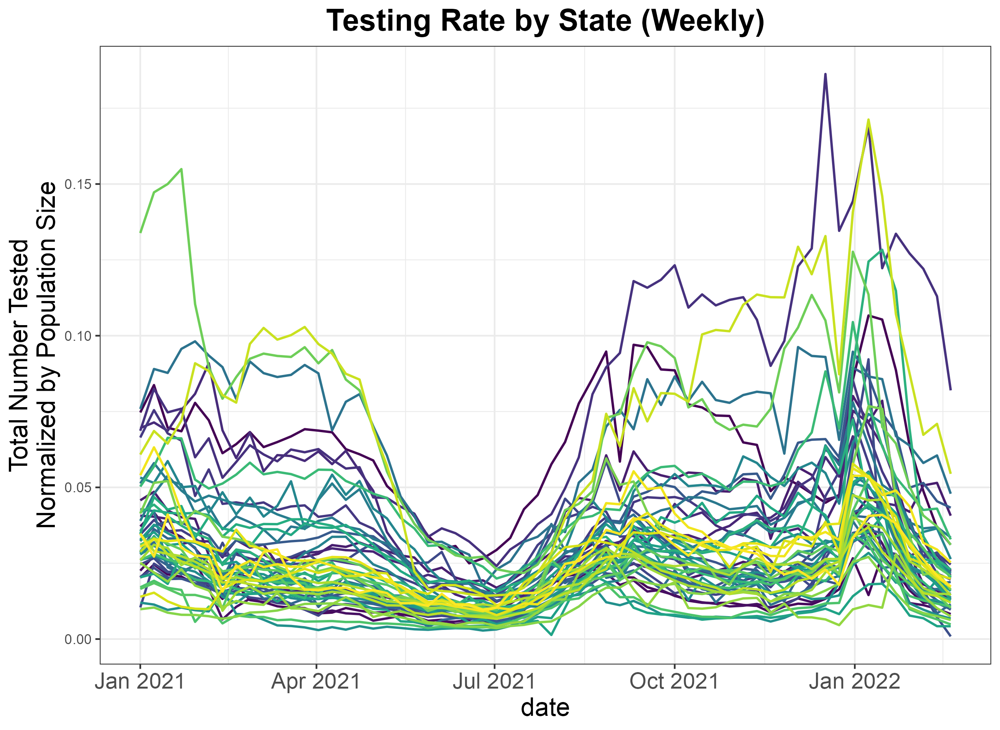

Chapter 1 Motivation
Throughout the COVID-19 pandemic, observed infections have guided decisions at both the individual and government levels. At the state-level, policies on phased reopening, for example, often include criteria on COVID-19 cases (California Department of Public Health, 2021; Charles D. Baker, 2021; Tom Wolf, 2020).
To make this data accessible to the public, several organizations, including the CDC (Centers for Disease Control and Prevention, 2020), John Hopkins University (Dong, Du, & Gardner, 2020), and the New York Times (The New York Times, 2022), compiled comprehensive dashboards presenting key metrics such as positive cases and test positivity rates across states.
However, our interpretation of case counts as a measure of transmission is limited by the fact that testing rates impact these trends. The number of positive cases we observe in a county, for instance, will be a result of that county’s testing capacity and testing behavior of its population. This means the relationship between observed infections and true total infections may not be monotonic.
The importance of considering testing rate led John Hopkins University to organize the most comprehensive testing database available in the United States (Dong et al., 2020), which enables us to see that testing rate varies substantially by state and time.

As we study the impact and transmission of SARS-CoV-2 as well as the efficacy of different interventions, we often turn to case counts for information. In this way, case counts form the basis for numerous types of analyses that inform our understanding of the pandemic. This means that bias in case counts due to unobserved infections can greatly impact our understanding of the pandemic.
One way testing rates can influence our understanding of COVID-19 is when we are seeking to make comparisons across different locations.
The government response to the pandemic has differed greatly by state, with a range of different policies and timelines as local governments weighted complex tradeoffs. The variability in state-level policies sparks several questions related to the consequences of these policies. Comparing case counts enables us to compare the impact of state-level management of the pandemic. For example, Kaufman et al. used cumulative case counts to study the effect of state-level social distancing policies (Kaufman et al., 2021). At the county scale, Jiang et al. evaluated the association between stay-at-home orders and daily incident cases (Jiang, Roy, Pollock, Shah, & McCoy, 2022), and Kao et al. looked at how the duration of multiple policy interventions – face mask mandates, stay-at-home orders, and gathering bans – affected monthly incidence (Kao et al., 2023).
The bias in case counts is particularly important for inference related to government interventions. With regard to government interventions, it is highly likely that lower testing resources may be related to less stringent policies in other respects. If this is the case, then lower cases may be observed in locations with less stringent policies as an artifact of inadequate testing rather than lower transmission. As a result, when we estimate the effect of a policy intervention based on observed cases, we may be underestimating the true impact.
Besides interventions, there has been substantial concern over the disparities in the impact of COVID-19. As a result, it is important to understand the relationship between various socioeconomic variables and case burden. Chen and Krieger showed a consistent monotonic relationship between the percent poverty and cumulative case burden at the zip-code tabulation area level in Illinois, with higher percent poverty associated with a higher case burden (J. T. Chen & Krieger, 2021). Similarly, Karmakar et al. showed in a cross-sectional analysis that for counties in the U.S., incident cases were associated with higher social vulnerability index (Karmakar, Lantz, & Tipirneni, 2021). This social vulnerability index is defined by the CDC, and includes information from a collection of census variables related to poverty, unemployment, and racial and ethnic minority status. Similar issues may arise when studying the effect of socioeconomic variables. Counties with higher social vulnerability (due to, for example, low economic resources) may also have lower testing resources, which may bias our comparisons to counties where testing is more adequate.
We also use cases to study the effect of vaccination at the population scale. Work in this area has been expansive. Harris showed an inverse relationship between cross-sectional COVID-19 incidence and county-level vaccination coverage during the Delta surge considering a sample of the counties with the largest population size (Harris, 2022), and Cuadros et al. found a similar trend in counties across the United States (Cuadros et al., 2022). Nevertheless, as the virus has evolved, the relationship between transmission and case counts has shifted, particularly with the evolution of the highly transmissible Omicron variant. Mclaughlin et al. found that there wasn’t a relationship between the percentage of the population fully vaccinated and case counts, contrasting findings from other waves (McLaughlin, Wiemken, Khan, & Jodar, 2022). However, they did find that higher booster uptake rates were associated with meaningful decreases in case counts, and higher vaccination rates and booster rates were both associated with decreases in COVID-19 mortality.
Beyond the efficacy of vaccines at the individual level, these studies also demonstrate that we can use case data to quantify the impact of vaccination efforts as a public health intervention. Coupled with information about genetic variants that are circulating, they also can extend our knowledge about the effect of this intervention across different phases of the pandemic.
Looking to the future, infection counts also may be informative as we better understand the impacts of long COVID-19 on a population scale. There is increased concern over the poorly characterized but widespread phenomenon of lingering COVID-19 symptoms, which includes but is not limited to symptoms of fatigue, dyspnea, chest pain, and palpitation. The heterogeneity of presentations and definitions has complicated research on the syndrome, yet its impact has been pervasive. In light of this, the NIH has made the initiative XXX to better understand and treat long COVID-19 [SOURCE.]
Infection counts are particularly relevant for the study of long COVID-19 at the population scale because, contrary to what we might expect, the severity of COVID-19 disease is not associated with the persistence of several symptoms, including anosmia, chest pain, cough, and palpitation (Dirican & Bal, 2022). Since lingering symptoms can be problematic even with mild cases, trying to characterize the cumulative burden of COVID-19 through a proxy such as hospitalization counts would not capture the full impact.
Ultimately, COVID-19 case counts are a key metric that informs our understanding of the pandemic. Case numbers are interesting in themselves to quantify the reach of the pandemic across different time periods, and they are also the inputs to an extensive array of analyses that aid our understanding of public health interventions, disparities in the impact of the virus, and differences in the dynamics among circulating genetic variants. This underlies the importance of quantifying the underestimation of COVID-19 infections and how the extent of underestimation differs across time and space.